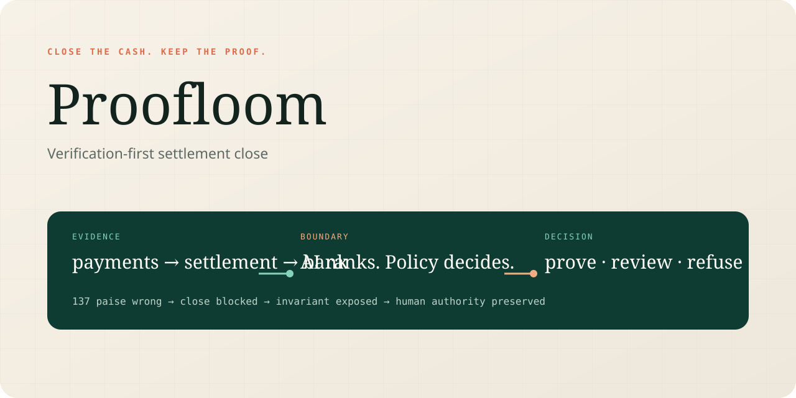

01 / FINANCIAL CONTROL + AI JUDGMENT
Proofloom
Verification-first settlement close. AI ranks damaged references; integer-paise invariants and explicit human authority decide whether the close is permitted.
Memory hook: 137 paise wrong → close refused.
Synthetic records and generated labels only. No real money movement, production accuracy, ROI, or regulatory claim.
